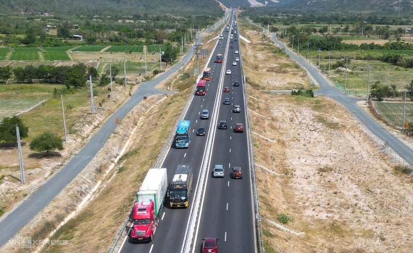

Chính thức: Bất an cao tốc thiếu làn khẩn cấp

Cao tốc Cam Lâm - Vĩnh Hảo đoạn qua xã Vĩnh Hảo (Bình Thuận cũ), tháng 1/2025. Ảnh: Việt Quốc
Lưu lượng xe tăng nhanh khi các cao tốc dần nối thông, song nhiều đoạn chưa có làn dừng khẩn cấp liên tục, khiến nguy cơ tai nạn gia tăng khi ôtô gặp sự cố.
Thường xuyên chạy tuyến Nha Trang - TP HCM, anh Nhất Vũ (48 tuổi, tài xế xe khách) cho biết hành trình hơn 400 km hiện chỉ khoảng 150 km có làn dừng khẩn cấp liên tục, chủ yếu trên trục TP HCM - Long Thành - Dầu Giây - Phan Thiết. Các đoạn còn lại cách khoảng 5 km mới có điểm dừng, buộc tài xế luôn căng thẳng để xử lý tình huống.
"Nếu xe nổ lốp, chết máy hay trục trặc kỹ thuật, rất khó cố chạy thêm vài km để tìm chỗ an toàn. Khi đó phải dừng ngay trên làn xe chạy, nếu không cảnh báo tốt sẽ rất nguy hiểm", anh nói. Theo anh, hệ thống trạm dừng nghỉ còn thiếu cũng khiến tài xế khó nghỉ ngơi, dễ mệt mỏi, tăng rủi ro mất an toàn.
Theo Bộ Xây dựng, đến cuối năm 2025, mạng lưới cao tốc cả nước đạt hơn 3.800 km, vượt mục tiêu đề ra. Riêng 5 năm gần đây, khoảng 2.000 km được đưa vào khai thác, gần gấp đôi một thập kỷ trước; trong đó năm 2025 hoàn thành gần 1.500 km, góp phần nối thông trục Bắc - Nam. Tuy vậy, do hạn chế nguồn lực và dự báo lưu lượng ban đầu, nhiều tuyến được phân kỳ đầu tư quy mô 2-4 làn xe, chưa bố trí làn dừng khẩn cấp liên tục.
Dưới góc nhìn chuyên gia, TS Chu Công Minh (chuyên ngành cầu đường) cho rằng việc thiếu làn dừng khẩn cấp liên tục không chỉ tiềm ẩn nguy cơ mất an toàn mà còn làm giảm năng lực thông hành so với thiết kế. Khi một xe dừng trên làn chạy, mặt đường bị thu hẹp, dễ gây ùn tắc và cản trở công tác cứu hộ, đặc biệt trên các tuyến chỉ hai làn xe – nơi gần như không có không gian dự phòng.

Cao tốc từ TP HCM ra Nha Trang chỉ đoạn từ TP HCM tới Phan Thiết có làn dừng khẩn cấp. Đồ họa: Tâm Thảo
Trong ngắn hạn, khi chưa thể mở rộng toàn tuyến, ông đề xuất tăng mật độ điểm dừng khẩn cấp với khoảng cách hợp lý để tài xế tiếp cận nhanh hơn. Cùng với đó, cần bổ sung camera, đẩy mạnh xử phạt nguội và tính toán kỹ hơn về lưu lượng, địa hình, trạm dừng nghỉ khi lập dự án mới.
Tại một số tuyến cao tốc phía Nam chưa có làn khẩn cấp liên tục, Khu Quản lý đường bộ 4 (Cục Đường bộ Việt Nam) đang triển khai giải pháp trước mắt. Trên tuyến Cam Lâm - Vĩnh Hảo, hệ thống cảnh báo được bổ sung các cụm chóp phản quang, khoảng cách dự kiến giảm từ một km xuống còn 500 m, hỗ trợ tài xế xử lý khi gặp sự cố.
Song song đó, phương án tổ chức giao thông và tốc độ khai thác được điều chỉnh theo hướng phân loại phương tiện. Ôtô 4-7 chỗ, xe tải dưới 3,5 tấn và xe khách dưới 29 chỗ chạy tối đa 90 km/h; các xe còn lại giới hạn 80 km/h. Hệ thống biển báo dự kiến hoàn tất điều chỉnh từ cuối tháng 3 đến đầu tháng 4. Lực lượng chức năng cũng tăng cường tuần tra, bố trí tổ lưu động với tần suất dày hơn, xử lý các lỗi nguy hiểm như dừng xe trên làn chạy, không đặt cảnh báo.
Đại diện Khu Quản lý đường bộ 4 khuyến cáo, khi phải dừng xe, tài xế cần bật đèn cảnh báo, đặt thiết bị nhận diện cách tối thiểu 150 m và nhanh chóng liên hệ lực lượng chức năng. Trước lúc vào cao tốc, đặc biệt trên tuyến chưa có làn khẩn cấp liên tục, người lái nên kiểm tra phương tiện để chủ động phòng ngừa rủi ro. Theo tài xế Văn Thành (43 tuổi), ý thức người tham gia giao thông vẫn là yếu tố then chốt. Tình trạng chạy quá tốc độ, chuyển làn thiếu quan sát, dừng đỗ tùy tiện vẫn phổ biến. "Nếu không cải thiện, ngay cả khi cao tốc được nâng cấp đồng bộ, nguy cơ mất an toàn vẫn khó giảm", anh nói.
Bình luận 3
Cao tốc nhưng mỗi làn khá hẹp, tất nhiên trên tiêu chuẩn tối thiểu, nhưng chiều rộng làn trên ảnh là hẹp, lại không có làn khẩn cấp nên rất nguy hiểm.
Nên đưa việc bắt buộc phải có làn dừng khẩn cấp và trạm nghỉ vào tiêu chuẩn kỹ thuật của đường CT.
Mong sao các cao tốc đang chuẩn bị làm như dầu giây- đà lạt làm rộng luôn 24m chứ lưu lượng xe giờ qua QL20 cực kỳ đông nếu làm 17m sẻ quá tải ngay